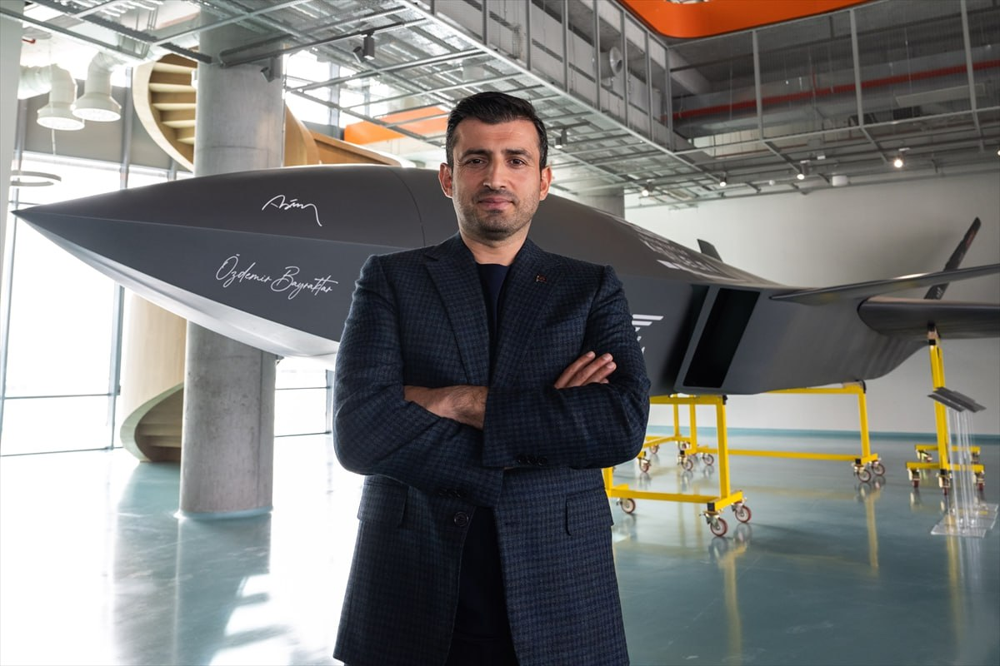
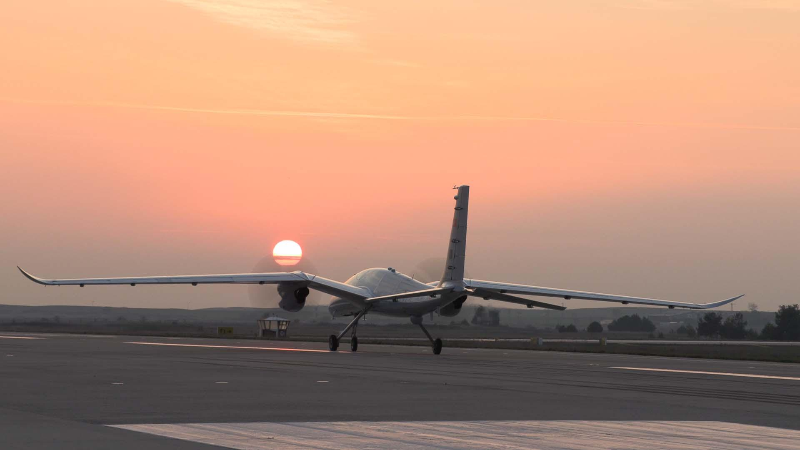

Türk savunma sanayisinin Cumhuriyet'in 100. yılına armağanları: BAYRAKTAR TB3 ve KIZILELMA

Türk savunma sanayisi, Cumhuriyet'in 100. yılında geleceğin muharebe sahasında oyun değiştirici olacak Bayraktar TB3 ve Bayraktar Kızılelma'yı göreve hazırlıyor.
Anadolu Ajansının (AA) Cumhuriyet'in 100. yıl dönümü nedeniyle hazırladığı "Türk savunma sanayisinin Cumhuriyetin 100. yılına armağanları" temalı dosya haberin üçüncü bölümünde Baykar tarafından geliştirilen TB3 ve Bayraktar KIZILELMA projeleri ele alındı.

Baykar Yönetim Kurulu Başkanı Selçuk Bayraktar, AA muhabirine yaptığı açıklamada, Cumhuriyet'in 100. yılına hazırladıkları en büyük sürprizin 20 yıllık hedefleri olan, havacılıkta geleceğin muharebe dünyasında oyun kurucu olmayı ifade eden Türkiye'nin ilk insansız savaş uçağı Bayraktar KIZILELMA'nın ilk uçuşunu gerçekleştirmesi olduğunu söyledi. Bayraktar, şöyle konuştu.
"Kızılelma yüksek bir hedefe, ideale yürümekse bu ilk günden beri en büyük hedefimizdi. Cumhuriyet'in 100. yılında uçuracağız demiştik. Bir sürpriz yapak 2023'e 1 ay kala ilk uçuşunu gerçekleştirdik. Sonrasında Kızılelma geliştirme ve test faaliyetlerine devam etti. Dünya havacılık tarihine damgasını vuracak uçuşlar icra etti. Bunlardan bir tanesi Bayraktar Akıncı ile yakın kol uçuşuydu. Bu dünyada ilk defa yapıldı. Bir anlamda geleceğin muharebesine şimdiden göz atmış olduk. Artık 5. nesil savaş uçaklarına üretilecek son insanlı savaş uçakları olarak bakılıyor. SİHA'larımız muharebe tarihinde nasıl paradigma değişikliğine yol açtıysa benzer bir durum yaşanacak. Filo otonomisiyle, yapay zekayla donatılmış ve pilotu tehlikeye sokmayan insansız savaş uçakları olacak. Geleceği bir anlamda ülkemiz adına yakınlaştırmış olduk. Kızılelma 2023 yılında bütün dünyaya damgasını vuracak uçuşlar gerçekleştirdi. Kızılelma ve Akıncı bu uçuşları milli teknoloji geliştirme seferberliğimizin milletimizle buluştuğu TEKNOFEST İstanbul'da gerçekleştirdi. Aynı zamanda Türk Yıldızları ile yakın kol uçuşu bir gösteri uçuşu olarak yapıldı. Bu da dünya havacılık tarihi açısından toplum önünde yapılması hasebiyle ilkti. Bu anlamda dolu dolu bir 100. yıl yaşadık. Semalarımda hür ve bağımsız olacağım diyen milletimizin ifadesi olan bu teknolojiler Cumhuriyet'in 100. yılında kutlanmış oldu."
TEKNOFEST'te rekorlar da "öğrenilmiş çaresizlik" de kırıldı
Cumhuriyet'in 100. yılına verilebilecek en güzel hediyenin TEKNOFEST'in 3 büyükşehirde gerçekleştirilmesi olacağına inanarak bu projeyi hayata geçirdiklerini dile getiren Bayraktar, festivalin 3 kentte de coşkuyla kutlandığını, yalnızca İstanbul'da 2,5 milyon kişinin katılım sağladığını ve katılım rekorları kırıldığını vurguladı. Bayraktar, bugüne kadar festivale katılan sayısının da 10 milyonu geride bıraktığını belirtti.
Teknoloji geliştirme serüveninde adeta dip dalgası olacak teknoloji yarışmalarına da 1 milyonun üzerinde sayıyla rekor başvuru aldıklarına işaret eden Bayraktar, bunların da 100. yıla damgasını vuran gelişmeler olduğunu söyledi. Selçuk Bayraktar, "TEKNOFEST, ülkemiz savunma sanayisinde nasıl bir ivme yakaladıysa teknolojinin tüm diğer sivil alanlarında da benzer bir ivmenin, bayrağımızı en yükseğe çekecek nice yüzbinlerce gencin olacağının göstergesi oldu. Bu da ikinci 100 yıla çok daha büyük hayallerle, umutlara bakacağımız anlamına geliyor. Bir anlamda da öğrenilmiş çaresizliğin yıkıldığına işaret ediyor. Bunlar bir anlamda 100. yıla damgasını vurmuş oldu." dedi.
Dünya muharebe tarihinde devrim olacak
Kızılelma'nın yanında dünyanın ilk SİHA gemisi olacak kısa pistli uçak gemisi TCG Anadolu için tasarladıkları Bayraktar TB3'ü geliştirme çalışmaları yürüttüklerini anlatan Bayraktar, yakın zamanda yer testlerinin, yerden havalanma ve iniş testlerinin gerçekleştirildiğini söyledi. Selçuk Bayraktar, şunları kaydetti:
"Bugün itibarıyla ilk uçuşunu gerçekleştirmeyi hedefliyoruz. TCG Anadolu'ya konuşlanacak olan Bayraktar TB3 ve Kızılelma havacılık tarihinde aslında bir devrimi işaret ediyor. Nasıl ki dünyada SİHA'larla ilk savaşı Türk orduları Karabağ'da kazandıysa Bayraktar TB2'ler vesilesiyle, filolar halinde uçan ve en gelişmiş hava savunma silahlarını, zırhlı araçları, tankları imha eden Bayraktar TB2'ler sayesinde dünyada muharebe paradigması değiştiyse, Bayraktar TB3 ve Kızılelma'nın TCG Anadolu'ya konuşlanmasıyla da dünya muharebe tarihinde devrim yaratacak bir çığır açılmış olacak. Bu da Cumhuriyetimizin 100. yılına bir diğer hediyemiz olacak.".
